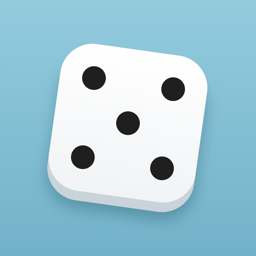

DiceFlick
A 3D dice roller for iPhone and iPad. Roll anything from a d4 to a d20 with a tap or a shake.
DiceFlick rolls realistic 3D dice for board games, tabletop role-playing games, classrooms and anything else that needs a fair roll. Pick a die, choose how many to roll, and tap. The dice tumble, land and show the total, and the background color shifts with how high you rolled.
Features
- 3D dice: d4, d6, d8, d10, d12 and d20
- Roll 1 to 6 dice at once, with the total shown
- Tap anywhere or shake your device to roll
- A background color that reflects how high the roll was
- Roll history of your last 100 rolls, kept only on your device
- Sound, Haptics, Shake to Roll and Keep History settings
- VoiceOver announcements, Dynamic Type and Reduce Motion support
- No ads, no accounts, no tracking, and it works fully offline
Frequently asked questions
How do I roll?
Tap anywhere on the screen. You can also shake your iPhone or iPad, unless Shake to Roll is turned off in Settings.
How do I change dice?
Tap the dice button in the bottom-left corner (it shows what you're rolling, such as 2d6) and pick the type of die (d4, d6, d8, d10, d12 or d20) and how many to roll, from 1 to 6. You can also change both in Settings. Every die in a roll is the same type, and the total is shown after they land.
How do I clear my roll history?
Open History (the clock button), tap Clear and confirm. To stop saving rolls at all, turn off Keep History in Settings (the gear button). Deleting the app also deletes its history and settings.
Does DiceFlick collect any data?
No. DiceFlick has no accounts, ads, analytics or tracking, and it never connects to the internet. Your roll history and settings are stored only on your device and are never sent anywhere. See the privacy policy for details.
Support
Found a bug or have a question? Email ayush.pathak021@outlook.com and include your device model and iOS version if you can.